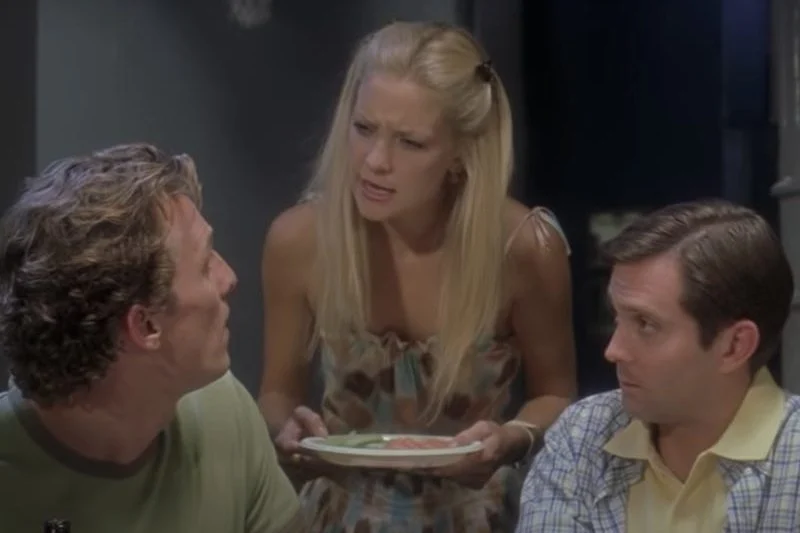

Did You Know?
- TARS, the AI machine in Interstellar, is real.
- Emma Stone Wrote Gwen Stacy's Graduation Speech Herself
- The Hangover was inspired by real-life events.
- It wasn't the only time Kate Hudson and Matthew McConaughey played a couple in How to lose a guy in 10 days. 
- Tick, Tick… Boom! is a 2021 American musical drama film
- The film had been in the works for 20 years
- The movie isn't terribly accurate (and Sorkin won't argue)
- In the ending scene of the movie "Fight Club" All the buildings that blow up were actually owned by Fox
- Paul schrader wrote taxi driver in two weeks
- Spider-Man: Into The Spider-Verse was announced by mistake

The real TARS isn’t precisely the complex AI machine you saw in the movie; rather, TARS is a giant puppet.

Emma Stone played Gwen Stacy, Peter Parker's love interest. In the second film, this character was in charge of delivering the graduation speech, and she touched the audience with her inspirational message of inviting the students to live to the fullest. A lesser-known fact about this moving speech is that it was written by none other than Stone herself, which proves that, in addition to being a brilliant actress, she is also a very good writer.
The concept for The Hangover was inspired by a real-life incident experienced by one of the film’s writers, Jon Lucas.
Five years after playing Ben and Andie in How to Lose a Guy in 10 Days, Hudson and McConaughey reunited to play a recently divorced couple in the 2008 film Fool’s Gold. There's certainly no denying the pair have chemistry.
The film is based on the semi-autobiographical musical of the same name by Jonathan Larson

The Conjuring couldn’t exactly be described as an overnight success. In fact, the idea for the film initially emerged 20 years previously when film producer Tony DeRosa-Grund was played a tape of Lorraine’s original interview with Carolyn Perron by her husband Ed. Derosa-Grund attempted to get the project off the ground for the next 14 years to no avail, although he very nearly landed a deal with the production company responsible for The Haunting in Connecticut.
Given that The Social Network isn't just based on a true story but on a relatively recent true story, it’s not surprising that a lot of people were combing through the film to assess the accuracy. All the parties involved said that it was a dramatization and a Hollywood version of the story, but mostly, they accepted that as being required to tell a compelling story. Sorkin made no bones about the nature of his film, telling New York Magazine, “I don't want my fidelity to be to the truth". I want it to be to storytelling.
he buildings that blow up in the end are all Fox-owned buildings digitally composited into the shot. It was feared that it would invite legal action against the production if they portrayed real credit card companies blowing up.
Paul Schrader wrote the script for Taxi Driver in just two weeks. He was inspired by his own experiences of loneliness and depression, and he wanted to create a character who was a hero and a villain at the same time.
Due to the Amazing Spider-Man's lukewarm reception, Sony had to find some way to rejuvenate the franchise. Shortly after, Sony's co-chairman, Amy Pascal, hired Phil Lord and Christopher Miller to write a script for an animated comedy, centred around the wallcrawler.